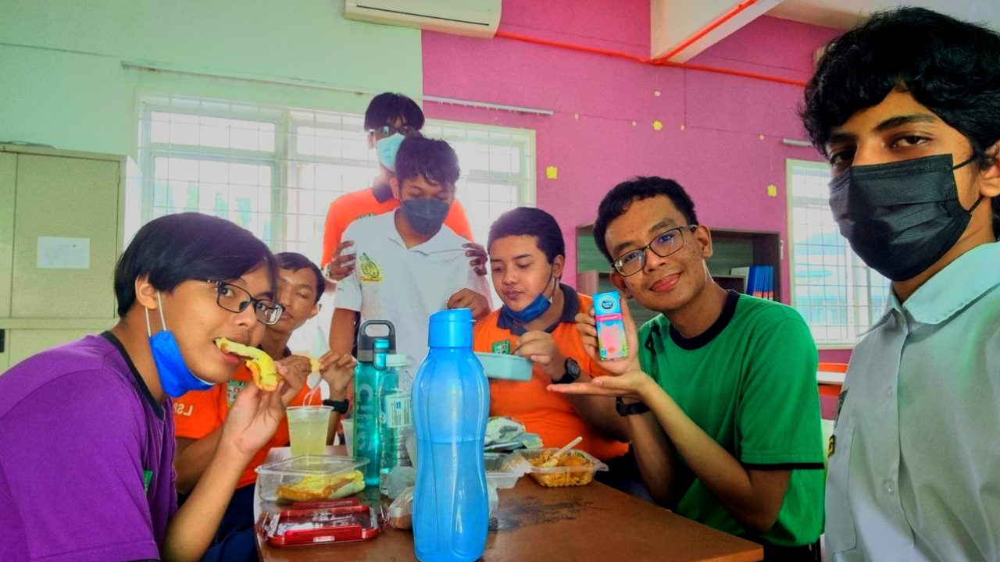

2011 - 2016
Elementary School
The elementary school name was Sekolah Kebangsaan Petaling Jaya a.k.a. SKPJ. Truth be told that I don't remember much about my time studying there but I believe it was filled with pleasant memories.

Several pictures of my high school and university friends:
The elementary school name was Sekolah Kebangsaan Petaling Jaya a.k.a. SKPJ. Truth be told that I don't remember much about my time studying there but I believe it was filled with pleasant memories.
The high school name was Sekolah Menengah Kebangsaan La Salle Petaling Jaya. This time around was filled with harder issues and it has taught me lessons on both academic wise and human interactions.
The university name is Universiti Teknologi Mara a.k.a. UiTM. I definitely was shock at first with the new environment and being far from my parents for the first time in my life for an extended period of time.
Ever since I became a librarian back in elementary school, I would not have believed you if you told me that becoming a librarian would be some sort of passion for me. But the task at the time was easy as I only needed to rearrange the books.
When high school came around, I decided to take up the librarian role again because I needed to escape several situations that I could not get myself out of, and it was a good time for sure. There is a more challenging task, but I took it with strides.
My position at the bakery ranges from cashier to sales assistant. I made coffee, served pastries, and managed money. It was definitely a worthwhile experience and I made several good friends when I was working there.
People call me Zee. They also said I write too much but hey what else can I do to help me make sense of every aspect of my life? My love for writing ties into one of my fears - memory loss.
My earbuds and headphones have seen better days due to the hours of music and podcasts playing in my ear. I have thousands of music playlists for every mood because music is what fuels me as a human being.
So yeah, I would often say Im not hungry but then again, I love food as much as I love reading books so take that as you will. Cafe-hunting and taking pictures of the well-prepared dishes and drinks? Sign me up because thats what I called a good time.
It's hard to choose when both options provide the best benefit and satisfaction.
I can't decide whether I prefer coffee or tea. Something is soothing about drinking tea, but on the other hand, coffee provides a strong sense of energy that can jolt you up.
So I guess that kind of informs all of you that firstly, I'm an indecisive person who can always change his mind with the help of overthinking. And secondly, I'm just someone who prefers both coffee and tea.
Aspire to be bigger but cherish the child-like hopes and dreams
Once, when I was a child, I dreamed of owning a two-story building. I have a vision where I would open up a coffeehouse/bookstore on the first floor of the building, while my residence would reside on the second floor, beneath the coffeehouse/bookstore. A cute dream pipeline that still brings a smile to my face.